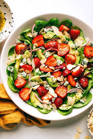

Home
Spinach and Strawberry salad recipe

Description
We enjoy this spinach strawberry salad all year long whenever we can find strawberries! Even the grandchildren can't get enough of this quick and easy dish. The combination of fresh spinach, juicy strawberries, and a tangy dressing makes it a crowd-pleaser every time. It’s the perfect balance of sweet and savory!
Ingredients
- Spinach: 2 bunches, rinsed and torn into small bite-size pieces.
- Strawberries: 4 cups of sliced strawberries.
- Vegetable oil
- Sugar
- White wine vinegar
- Sesame seeds
- Paprika: this is optional.
Steps
- Toss spinach and strawberries together: A large bowl should do the trick.
- Whisk together ingredients: Add the vegetable oil, sugar, white wine vinegar and sesame seeds. Finish with a touch of paprika (optional)